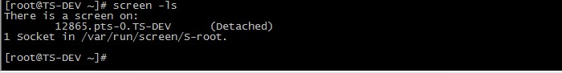
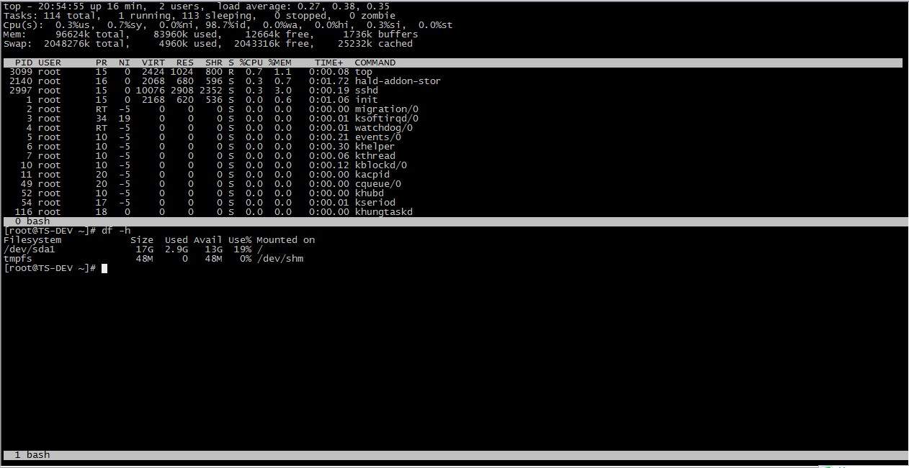
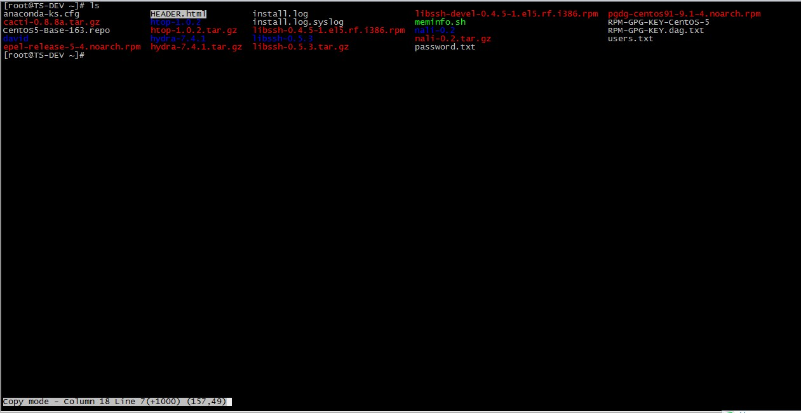

Linux Screen 命令使用¶
本页最后更新时间：2022年7月21日
参考教程¶
一、背景
系统管理员经常需要SSH 或者telent 远程登录到Linux 服务器，经常运行一些需要很长时间才能完成的任务，比如系统备份、ftp 传输等等。通常情况下我们都是为每一个这样的任务开一个远程终端窗口，因为它们执行的时间太长了。必须等待它们执行完毕，在此期间不能关掉窗口或者断开连接，否则这个任务就会被杀掉，一切半途而废了。
二、简介
GNU Screen是一款由GNU计划开发的用于命令行终端切换的自由软件。用户可以通过该软件同时连接多个本地或远程的命令行会话，并在其间自由切换。
GNU Screen可以看作是窗口管理器的命令行界面版本。它提供了统一的管理多个会话的界面和相应的功能。
- 会话恢复
只要Screen本身没有终止，在其内部运行的会话都可以恢复。这一点对于远程登录的用户特别有用——即使网络连接中断，用户也不会失去对已经打开的命令行会话的控制。只要再次登录到主机上执行screen -r就可以恢复会话的运行。同样在暂时离开的时候，也可以执行分离命令detach，在保证里面的程序正常运行的情况下让Screen挂起（切换到后台）。这一点和图形界面下的VNC很相似。
- 多窗口
在Screen环境下，所有的会话都独立的运行，并拥有各自的编号、输入、输出和窗口缓存。用户可以通过快捷键在不同的窗口下切换，并可以自由的重定向各个窗口的输入和输出。Screen实现了基本的文本操作，如复制粘贴等；还提供了类似滚动条的功能，可以查看窗口状况的历史记录。窗口还可以被分区和命名，还可以监视后台窗口的活动。
- 会话共享
Screen可以让一个或多个用户从不同终端多次登录一个会话，并共享会话的所有特性（比如可以看到完全相同的输出）。它同时提供了窗口访问权限的机制，可以对窗口进行密码保护。
GNU's Screen 官方站点：http://www.gnu.org/software/screen/
三、语法
# screen [-AmRvx -ls -wipe][-d <作业名称>][-h <行数>][-r <作业名称>][-s ][-S <作业名称>]
参数说明
-A 将所有的视窗都调整为目前终端机的大小。 -d <作业名称> 将指定的screen作业离线。 -h <行数> 指定视窗的缓冲区行数。 -m 即使目前已在作业中的screen作业，仍强制建立新的screen作业。 -r <作业名称> 恢复离线的screen作业。 -R 先试图恢复离线的作业。若找不到离线的作业，即建立新的screen作业。 -s 指定建立新视窗时，所要执行的shell。 -S <作业名称> 指定screen作业的名称。 -v 显示版本信息。 -x 恢复之前离线的screen作业。 -ls或--list 显示目前所有的screen作业。 -wipe 检查目前所有的screen作业，并删除已经无法使用的screen作业。
四、常用screen参数
screen -S yourname -> 新建一个叫yourname的session screen -ls -> 列出当前所有的session screen -r yourname -> 回到yourname这个session screen -d yourname -> 远程detach某个session screen -d -r yourname -> 结束当前session并回到yourname这个session
在每个screen session 下，所有命令都以 ctrl+a(C-a) 开始。 C-a ? -> 显示所有键绑定信息 C-a c -> 创建一个新的运行shell的窗口并切换到该窗口 C-a n -> Next，切换到下一个 window C-a p -> Previous，切换到前一个 window C-a 0..9 -> 切换到第 0..9 个 window Ctrl+a [Space] -> 由视窗0循序切换到视窗9 C-a C-a -> 在两个最近使用的 window 间切换 C-a x -> 锁住当前的 window，需用用户密码解锁 C-a d -> detach，暂时离开当前session，将目前的 screen session (可能含有多个 windows) 丢到后台执行，并会回到还没进 screen 时的状态，此时在 screen session 里，每个 window 内运行的 process (无论是前台/后台)都在继续执行，即使 logout 也不影响。 C-a z -> 把当前session放到后台执行，用 shell 的 fg 命令则可回去。 C-a w -> 显示所有窗口列表 C-a t -> Time，显示当前时间，和系统的 load C-a k -> kill window，强行关闭当前的 window C-a [ -> 进入 copy mode，在 copy mode 下可以回滚、搜索、复制就像用使用 vi 一样 C-b Backward，PageUp C-f Forward，PageDown H(大写) High，将光标移至左上角 L Low，将光标移至左下角 0 移到行首 $ 行末 w forward one word，以字为单位往前移 b backward one word，以字为单位往后移 Space 第一次按为标记区起点，第二次按为终点 Esc 结束 copy mode C-a ] -> Paste，把刚刚在 copy mode 选定的内容贴上
五、使用 screen
5.1 安装screen
流行的Linux发行版（例如Red Hat Enterprise Linux）通常会自带screen实用程序，如果没有的话，可以从GNU screen的官方网站下载。
```Plain Text [root@TS-DEV ~]# yum install screen [root@TS-DEV ~]# rpm -qa|grep screen screen-4.0.3-4.el5 [root@TS-DEV ~]#
| Text Only | |
|---|---|
1 2 3 4 5 6 | |
screen启动后，会创建第一个窗口，也就是窗口No. 0，并在其中打开一个系统默认的shell，一般都会是bash。所以你敲入命令screen之后，会立刻又返回到命令提示符，仿佛什么也没有发生似的，其实你已经进入Screen的世界了。当然，也可以在screen命令之后加入你喜欢的参数，使之直接打开你指定的程序，例如：
```Plain Text [root@TS-DEV ~]# screen vi david.txt
| Text Only | |
|---|---|
1 2 3 4 5 6 7 8 | |
这个例子中我开启了三个窗口，其中*号表示当前位于窗口2，-号表示上一次切换窗口时位于窗口1。
Screen默认会为窗口命名为编号和窗口中运行程序名的组合，上面的例子中窗口都是默认名字。练习了上面查看窗口的方法，你可能就希望各个窗口可以有不同的名字以方便区分了。可以使用快捷键C-a A来为当前窗口重命名，按下快捷键后，Screen会允许你为当前窗口输入新的名字，回车确认。
5.4 会话分离与恢复
你可以不中断screen窗口中程序的运行而暂时断开（detach）screen会话，并在随后时间重新连接（attach）该会话，重新控制各窗口中运行的程序。例如，我们打开一个screen窗口编辑/tmp/david.txt文件：
```Plain Text [root@TS-DEV ~]# screen vi /tmp/david.txt
| Text Only | |
|---|---|
1 2 3 4 5 6 7 8 9 10 | |

重新连接会话：
```Plain Text [root@TS-DEV ~]# screen -r 12865
| Text Only | |
|---|---|
1 2 3 4 5 6 7 8 9 10 11 12 13 14 15 16 17 18 19 20 21 22 23 24 25 26 27 28 29 30 | |
这个命令会将你朋友的终端Attach到你的Screen会话上，并且你的终端不会被Detach。这样你就可以和朋友共享同一个会话了，如果你们当前又处于同一个窗口，那就相当于坐在同一个显示器前面，你的操作会同步演示给你朋友，你朋友的操作也会同步演示给你。当然，如果你们切换到这个会话的不同窗口中去，那还是可以分别进行不同的操作的。
6.2 会话锁定与解锁
Screen允许使用快捷键C-a s锁定会话。锁定以后，再进行任何输入屏幕都不会再有反应了。但是要注意虽然屏幕上看不到反应，但你的输入都会被Screen中的进程接收到。快捷键C-a q可以解锁一个会话。
也可以使用C-a x锁定会话，不同的是这样锁定之后，会话会被Screen所属用户的密码保护，需要输入密码才能继续访问这个会话。
6.3 发送命令到screen会话
在Screen会话之外，可以通过screen命令操作一个Screen会话，这也为使用Screen作为脚本程序增加了便利。关于Screen在脚本中的应用超出了入门的范围，这里只看一个例子，体会一下在会话之外对Screen的操作：
Plain Text
[root@TS-DEV ~]# screen -S sandy -X screen ping www.baidu.com
这个命令在一个叫做sandy的screen会话中创建一个新窗口，并在其中运行ping命令。
6.4 屏幕分割
现在显示器那么大，将一个屏幕分割成不同区域显示不同的Screen窗口显然是个很酷的事情。可以使用快捷键C-a S将显示器水平分割，Screen 4.00.03版本以后，也支持垂直分屏，快捷键是C-a |。分屏以后，可以使用C-a 在各个区块间切换，每一区块上都可以创建窗口并在其中运行进程。
可以用C-a X快捷键关闭当前焦点所在的屏幕区块，也可以用C-a Q关闭除当前区块之外其他的所有区块。关闭的区块中的窗口并不会关闭，还可以通过窗口切换找到它。

6.5 C/P模式和操作
screen的另一个很强大的功能就是可以在不同窗口之间进行复制粘贴了。使用快捷键C-a 或者C-a [可以进入copy/paste模式，这个模式下可以像在vi中一样移动光标，并可以使用空格键设置标记。其实在这个模式下有很多类似vi的操作，譬如使用/进行搜索，使用y快速标记一行，使用w快速标记一个单词等。关于C/P模式下的高级操作，其文档的这一部分有比较详细的说明。
一般情况下，可以移动光标到指定位置，按下空格设置一个开头标记，然后移动光标到结尾位置，按下空格设置第二个标记，同时会将两个标记之间的部分储存在copy/paste buffer中，并退出copy/paste模式。在正常模式下，可以使用快捷键C-a ]将储存在buffer中的内容粘贴到当前窗口。

6.6 更多screen功能
同大多数UNIX程序一样，GNU Screen提供了丰富强大的定制功能。你可以在Screen的默认两级配置文件/etc/screenrc和$HOME/.screenrc中指定更多，例如设定screen选项，定制绑定键，设定screen会话自启动窗口，启用多用户模式，定制用户访问权限控制等等。如果你愿意的话，也可以自己指定screen配置文件。
以多用户功能为例，screen默认是以单用户模式运行的，你需要在配置文件中指定multiuser on 来打开多用户模式，通过acl*（acladd,acldel,aclchg...）命令，你可以灵活配置其他用户访问你的screen会话。更多配置文件内容请参考screen的man页。